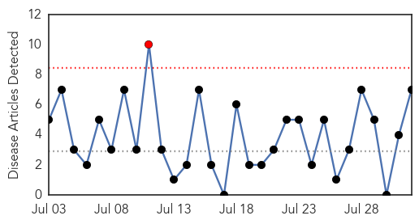

30 Day Trends
Web: 1 alerts, 0 warnings
Twitter: 0 alerts, 0 warnings
Top Articles:
- 0.999
- Six people in south Louisiana became infected with chikungunya while traveling, DHH reports
- 0.998
- This Monsoon, Colorado Faces Wrath of West Nile Virus! - Dumb Out
- 0.977
- Province warns of West Nile risk on holiday weekend
- 0.961
- First reports of West Nile Virus coming in
- 0.938
- Health Officials Warn of West Nile Virus in Santa Ana
- 0.799
- West Nile virus confirmed in Eastern Idaho
- 0.778
- Sample of mosquitoes tests positive for West Nile in Fort Bend County
Top Tweets:
-
No tweets found for Aug 01, 2014
Web/News Articles
Tweets